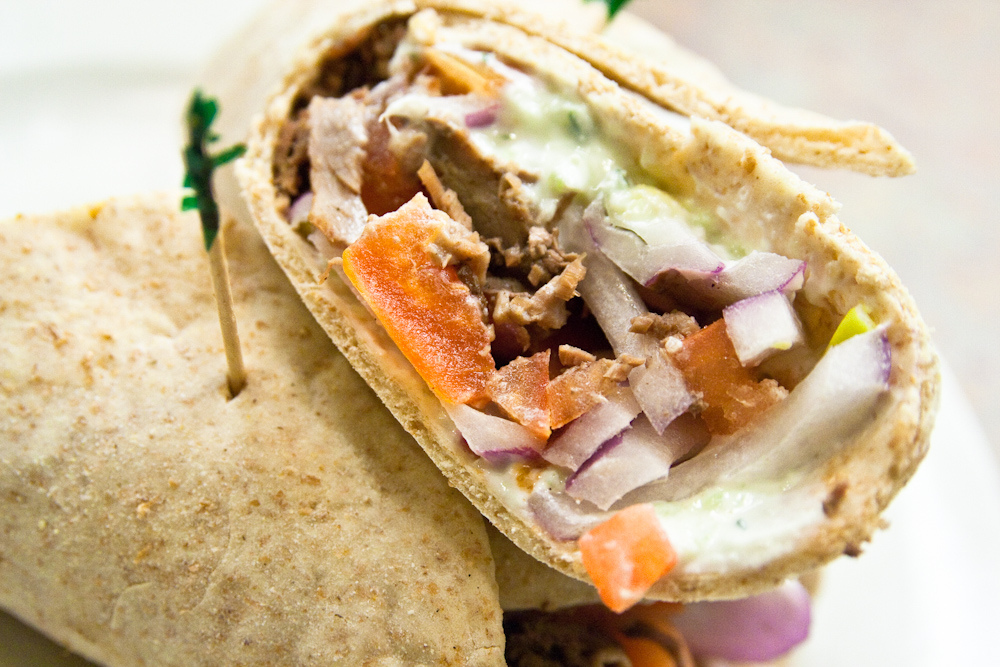

<!DOCTYPE html>
<html>
 <head>
   <script src="../altertifyjs/alertify.min.js"></script>
  <meta charset="utf-8">
  <title></title>
 </head>
 <body>
  <form id="contact-form"       action="https://formspree.io/greekinoutsc@gmail.com"
        method="POST">
      <input id="inputName" type="text" name="name">
      <input id="inputEmail" type="text" name="_replyto">
      <input id="inputMessage" type="textarea" name="" value="">
      <input type="submit" value="Send">
      <input type="hidden" name="_next" value="//brittanyandoresti.github.io/GreekinOut/" />

  </form>

<script type="text/javascript"src="../JS/our.js"></script>
<script src="../altertifyjs/alertify.min.js"></script>

</body>
</html>


<!--

<!DOCTYPE html>
<html>
  <head>
    <meta charset="utf-8">
    <title></title>
    <link rel="stylesheet" href="../CSS/our_story.css">
    <link rel="stylesheet" href="https://cdnjs.cloudflare.com/ajax/libs/font-awesome/4.7.0/css/font-awesome.min.css">
   </head>

   <header>

    <div class="navBar">
        <nav>

         <div class="logo">
          
         </div>
          <div class="favicons">
              <a href="https://www.facebook.com/Greekin-Out-178764729381099/">
              <i class="fa fa-facebook-square" style="font-size:45px"></i></a>

              <a href="mailto:greekinoutsc@gmail.com"><i class="fa fa-envelope" style="font-size:45px"></i></a>

              <a href="tel:843-996-0543"><i class="fa fa-phone" style="font-size:45px"></i></a>

              <a href="https://www.instagram.com/greekinoutsc/"><i class="fa fa-instagram" style="font-size:45px"></i></a>
          </div>
          <ul>
            <li><a href="../index.html"><button type="button" name="button"> <h3>Home</h3></button></a></li>

            <li><a href="Calendar.html"><button type="button" name="button"><h3>Calendar</h3></button></a></li>

            <li><a href="ContactUs.html"><button type="button" name="button"><h3>Contact Us</h3></button></a></li>

            <li><a href="Menu.html"><button type="button" name="button"><h3>Menu</h3></button></a></li>

            <li><a href="Gallery.html"><button type="button" name="button"><h3>Gallery</h3></button></a></li>

            <li><a href="#"><button type="button" name="button"><h3>Our Story</h3></button></a></li>

            </ul>
          </nav>

          </header>
  <body>
    <a href="https://www.facebook.com/Greekin-Out-178764729381099/">
    <i class="fa fa-facebook-square" style="font-size:45px"></i></a>
    <div class="bar_1">

      <div class="bar_1_words">
        <h2>OUR INSPIRATION
        <p> Greekin' Out Food Truck was inspired due to the desire of a family; mother, daughter and son, wanting to be together.  They chose traditional Greek cuisine where partner Dorian Arsi could utilize his delicious, made from scratch, authentic family recipes. </p>
      </div>
      <h4> </h4>

    </div>

    <div class="bar_2">
      <h4> </h4>
      <div class="bar_2_words">
        <h2>OUR FOOD TRAILER</h2>

        <p> Charlestons new and unique food trailer serves traditional Greek food, Gyros, homemade Tzatziki and sauces, fresh cooked marinated meats, flatbreads, zesty orzo bowls, amazing dressed fries, Vegetarian options and more. </p>
      </div>
    </div>


    <div class="Charleston_filler">
        
          <p>Greekin' Out Charleston</p>
    </div>


      <div class="gyro1Box">


          <div class="blurBox">

                      <h2>OUR INSPIRATION
                        <br>
                        <br>
                        Greekin' Out Food Truck was inspired due to the desire of a family; mother, daughter and son, wanting to be together.  They chose traditional Greek cuisine where partner Dorian Arsi could utilize his delicious, made from scratch, authentic family recipes.
                        <br>
                        <br>
                        OUR FOOD TRAILER
                        <br>
                        <br>  Charlestons new and unique food trailer serves traditional Greek food, Gyros, homemade Tzatziki and sauces, fresh cooked marinated meats, flatbreads, zesty orzo bowls, amazing dressed fries, Vegetarian options and more.   </h2>
          <!--  -->
      </div>


  </body>
</html> -->
